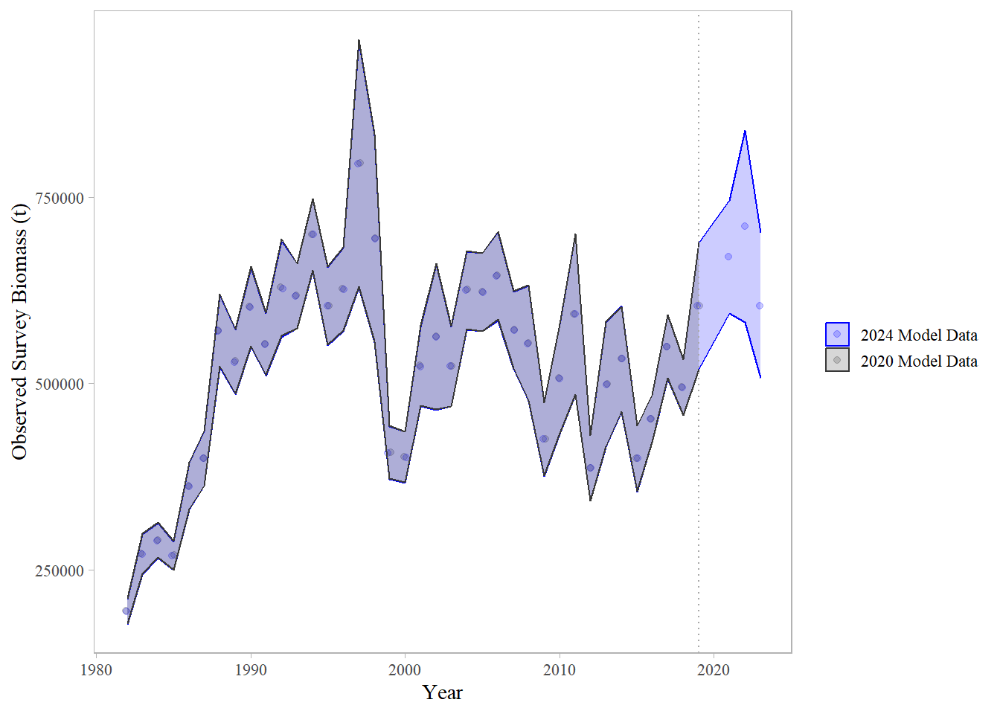
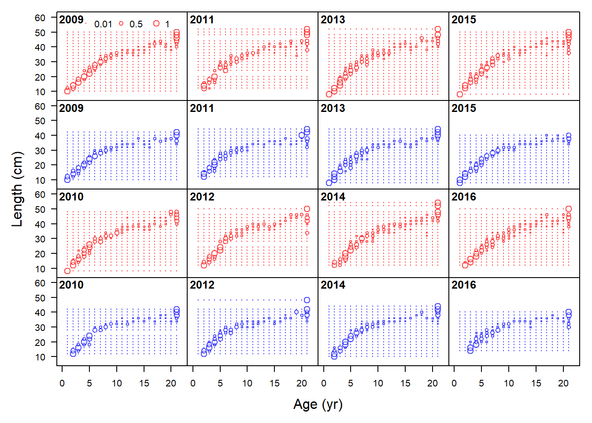
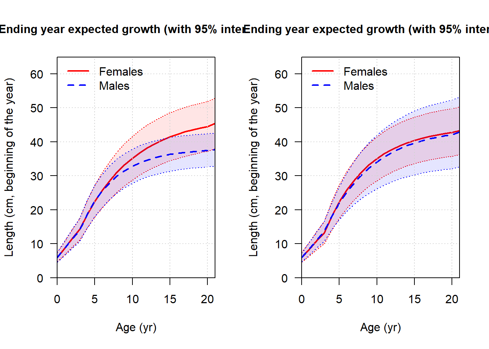

2024 BSAI FHS Bridging Analyses
Overview
This electronic document describes the analyses undertaken to bridge the last “full” assessment of BSAI Flathead Sole (Monnahan, 2020) into the latest Stock Synthesis (SS3) software version, as well as explorations of sequential inclusion of recent data.
The general workflow was as follows:
Move the 2020 model, referred to as Model 18.2c (2020), from SS3 version 3.30.16 to the the newest SS3 software version as of December 2023 (3.30.22) downloaded from the NOAA Virtual Lab. Comparisons between model derived quantities and likelihoods are provided in this document.
Compare the historical and newly-pulled data. The “old data pull approach” uses code from Drs. McGilliard & Monnahan in a local R package entitled
newsbss, which is highly customized and not actively maintained. The “newly-pulled” data are obtained using theafscdatapackage. The latter is the preferred method since it is actively maintained and provides a unified approach for many stocks. For many data sources I ran the 2020 model with only that data source changed, when I needed to convince myself that trivial differences in the raw data extraction were indeed trivially impactful.Sequentially bridge the data obtained via
afscdataModel 18.2c (2020) has catches and fishery length comps through 2020, and everything else through 2019. There was also mean size-at-age data through 2016 but it was not used (fit to) in the model. We added catches through 2023, with an estimate of 2024 catches, then survey abundance indices, then survey lengths, then survey CAALs (marginal ages are ghosted, but included as well), then fishery lengths, then fishery ages. The impact of each of these five steps is documented below. This bridged model, with updated software and data inputs but no structural changes is labeled as Model 18.2c (2024).
Stock Synthesis Software Update 3.30.22
Warnings
Model 18.2c (2020) had generic warnings about the recr_dist method, poor \(F_{MSY}\) convergence, and an issue with the final gradient. Only the latter is of concern. Model 18.2c run with the new SS3 software threw the same warnings as well as an indication that the initial value for parm 11 was greater than the max (999\>5); this is the end logit for the survey selex (forcing it to be asymptotic). I am comfortable with the consistency of these warnings and clean them up below; the gradient is identical between models (0.0015022).
Likelihood Components
Model 18.2c (2020) Model 18.2c (2020) - software transition Label
1 1.79154e+03 1.79154e+03 TOTAL
2 7.01686e-14 7.01686e-14 Catch
3 2.91819e-04 2.91819e-04 Equil_catch
4 -3.63359e+01 -3.63359e+01 Survey
5 2.11536e+02 2.11536e+02 Length_comp
6 1.61011e+03 1.61011e+03 Age_comp
7 6.22357e+00 6.22357e+00 Recruitment
11 3.35616e-03 3.35616e-03 Parm_softbounds

SS3 Bridging Conclusion
Based on the above explorations, I am comfortable that moving to the latest SS3 version is not impacting model behavior. After completing this exercise, I addressed the warnings in the latest model via the following:
- Change
recr_dist_methodto 4 (line 17) and removing associated stuff lines 99-101 - Change the
INITfor Age_DblN_end_logit_Survey to 20 and the MAX to 25 to get rid of the bound error. The selectivity is the same.
The warning-free model is in model_runs/18.2c_2020_ss3v33022w.
Data Exploration
Big-Picture Data Notes
This section of the script assumes that one has already downloaded and formatted the data one plans to use in the assesssment. To avoid separate scripts doing the same thing, I’m completing that step in R/2024_analysis.R. I wrote some functions for the afscdata and afscassess packages that reshape those data frames into the SS3 format, which is also accomplished in that script.
The original data pull method is in R/old_datapull_script.R. I used that code to download data in the manner consistent with the historical approach, when possible, and below reshape it into the SS3 format for comparison as a one-off. There are several cases where I wasn’t able to re-trace the 2020 model’s steps, mostly due to deprecated Oracle schemata.
Bering Flounder is not included in the compositional data; Dr. Monnahan caught and corrected this issue in 2020. The total survey biomass and catches do include both species.
Age-Read triaging
Due to staffing issues we had to reduce the number of otoliths read for all sources in years 2022 and 2023. After consulting with the Age & Growth team, they indicated they could read a total of about 750 BSAI FHS otoliths this year. This is a considerable (~75%) reduction given than normally we have about 600-800 otoliths for each source (survey and fishery) for each year; this typically encompasses every collected otolith from each source, so there are not historical ratios to use for guidance.
The two alternatives are to 1) disregard the fishery age-comps from 2022 & 2023 for this assessment, and devote all reading effort to the survey or 2) find a compromise (split) among the two fleets and years that doesn’t amount to simply adding noise to the model.
The figures below illustrate simulated composition data at varying levels of age-reads. We evaluated the resultant datasets based on how distinct they appeared from the full dataset. Our findings were as follows:
- Simply splitting the 750 otoliths evenly across years & fleets (187 reads each) results in a mis-represented plus group for the survey.
- Based on the data weights in the 2020 model, and the fact that survey CAALs are used to inform growth, it’s intuitively preferable to assign more otolith reads to the survey data. This could range from completely ignoring the fishery data for these years to forming some sort of compromise among the datasets.
- The data weights would suggest that 2.5x the number of otoliths should be read from the survey (equaling 267 survey otoliths per year). This approach results in satisfactory compositions for the survey but not for the fishery.
- A compromise between these two approaches, shown in blue below, where the survey gets 225 age-reads per year, and the fishery gets 175 age-reads per year, result in satisfactory compositions for both fleets.
After considering these results, Dr. Kapur decided in January 2024 to go with the first option and assign all available reader time to the survey, with the understanding that a) the A&G program could finish reading the leftover fishery otoliths for future assessment years, and b) we don’t expect these simulated datasets to have a strong influence on the terminal derived quantities given that recruitment deviations are set to zero for the last three years.


Fishery Catches
Both queries call from the council.comprehensive_blend_ca table. I ran the afscassess::clean_catch() function on the downloaded data, and the summary code for aggregating into tons. The approaches result in consistent catch histories, with the understandable exception of in-year catches for 2020 (which were under-estimated).

Fishery Length Compositions
I was unable to reproduce the fishery age- and len-comp routine used for the older version of the model. For reproducibility purposes, I am going to move towards the afscdata approach, which requires about 10% of the code to run, and does not require multiple reads of the same data sources. Importantly, I tested Model 18.2c with only the age-comp or len-comp data (separately) changed to those available using my new approach and found the impact on derived quantities to be trivial.
The current assessment passes the fishery length comp time series but only fits to data in years where there are not age-comp data (1977-1999, 2002-2003, 2008 and 2020).

showing uncertainty for all modelssubplot 13: index fits
Fishery Age Compositions
The old datapull script and afscdata both read from norpac.debriefed_spcomp, though the latter reads from mv and the former doesn’t. - Years 1994, 1995 and 1998 are not used in the model as length comp data are available. - The number of hauls is used as the input sample size; these values were recoverable for the age data using the afscdata approach, but the values for the length data are fairly different (see figure below). My guess is this has to do with updates to the database and/how filtration happens before compiling the comps. - The default afscdata approach did not have a means for getting sex-specific values for either comp dataset; I simply added these to the summary calls (ignoring unsexed fish) and reformatting things in SS3.
See the comments on the figures below for more information.

showing uncertainty for all modelssubplot 13: index fitsI am satisfied by this exploration that replacing the fishery compositional data with the outputs of afscdata does not have an unreasonable impact on model behavior, even given small changes in the observations.
Survey Biomass Data
From the 2020 SAFE:
“This assessment used a single survey index of”total” Hippoglossoides spp. biomass that included the EBS “standard” survey areas and AI survey areas for the years 1982-2018. Survey biomass for Hippoglossoides spp. in the Aleutian Islands is very small as compared to that from the EBS shelf survey, and survey biomass for Bering flounder is very small as compared to that of flathead sole. A linear regression is used to estimate a relationship between EBS shelf Hippoglossoides spp. survey biomass estimates and AI survey biomass estimates; this relationship is used to estimate AI survey biomass in years when no AI survey occurred (by using the linear equation to find an AI biomass estimate in a particular year based on the EBS biomass estimate for that year).”
Both Dr. Monnohan (per his notes) and I are not thrilled with this approach, since being model-based means that even historical datapoints can change with each new observation (assuming that the output of the lm is used to replace the survey biomass series wholesale, which would be statistically prudent). It’s also odd to me that the survey biomass data include both congeners while the compositional data does not; though it’s important to remember that Bering flounder constitutes about 1% of catches.
I coded the linear model into the afscdata::bsai_fhs data extraction function and did not use the afscassess::bts_biomass function for further post-processing. The former function saves the Synthesis-formatted dataframe directly to output/. The resultant index is identical to what was used before.

Survey Compositional Data
Survey CAALs
I was unable to reproduce the CAAL data used in 2020 with my own methods: starting with the _specimen data from either afscdata() or gapindex and running an intuitive calculation resulted in very different datasets (and derived quantities). The only thing that came close was to recycle Carey’s code to workup on the AL.df object corresponds to 2020/data/ages_survey_ebs.csv which is the roughly the same as what comes out of _specimen. So, I consolidated the code used in the last model into R/calculate_survey_comps.R. I suspect that the gapindex data pull has some behind-the-scenes summary steps (e.g., those leading to the MEAN length column) that render it distinct from the raw specimen data, and that my “creative” use of dplyr might be masking discrepancies in summary methods.
In addition, the afscassess package is not ready to handle the BSAI survey data, so marginal calculations had to be done with my own functions in R/.
The model uses survey conditional age-at-length data and marginal length composition data. The marginal survey ages are ghosted into the model for plotting purposes. The workflow for these data are as follows:
- Pull the raw data from
racebaseusing theafscdataapproach (see2024_analysis.R) - Calculate the marginal survey ages from
bsai_length_specimen.csv. - Calculate the marginal survey lengths from
bsai_length_data.csv. - Calculate conditional ages-at-length for each sex via the following: Starting with the EBS ages, filter out Bering Flounder (code
10140) and only include the EBS (subarea <= 6) and sexed fish (3). Bin the data into length and age bins greater than 0 (legacy codeBIN_AGE_DATAandBIN_LEN_DATA). Group by bins and tabulate the number in each unique combination; filling missing values from zero. Reformat into SS3 syntax.



showing uncertainty for all modelssubplot 13: index fitsSurvey Marginal Lengths


showing uncertainty for all modelssubplot 13: index fits
Survey Ages (ghosted)
These aren’t used in the model but I wanted to confirm the pull from afscdata looked reasonable.
Data Bridging
Importantly, the data updates conducted here are holistic, meaning that the entire time series of data for each component (where available) is replaced with what is currently available in the AKFIN database. A comparison between the data used in the last assessment and the latest version of that dataset is provided for each component above. The model that includes each change is named in the relevant header; these are hosted under model_runs/.
Timeseries Prep
Some initial steps are required to model dynamics through the present year. These are as follows: - end year - selex - forecasting file/doesn’t matter
Adding Catches
Adding Survey Biomass
Adding Survey CAALs
Adding Fishery Lengths
Adding Fishery Ages
Marginal Survey Ages & Lengths (ghosted)
Bridged Operational Update Model, 18.2c (2024)
This is model 18.2c (2024) and represents an “operational update”; the model structure has not been modified, and only the input data have been revised to reflect the current database. Additional explorations with this model that extend beyond the scope of an “operational update” are provided in 2024_sensitivity_analysis.qmd.